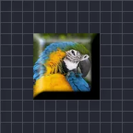

Мягкая фаска

Придаёт непрозрачным частям слоя мягкую округлую фаску с подсветкой с одной стороны.
Настройки
| Настройка | Тип | Диапазон | По умолчанию |
|---|---|---|---|
| Размер | Число | от 0 до 300 | 44 |
| Угол света | Угол | от -3600° до 3600° | 135° |
| Глубина | Число | от 0 до 5 | 1 |
| Интенсивность | Число | от 0% до 100% | 60% |
| Блик | Цвет | – | #FFFFFF |
| Тень | Цвет | – | #000000 |
| Угол рассеянного света | Угол | от -3600° до 3600° | 45° |
| Угол блика | Угол | от -3600° до 3600° | 45° |
| Цвет рассеянного света | Цвет | – | #FFFFFF |
| Цвет блика | Цвет | – | #FFFFFF |
| Интенсивность рассеяния | Число | от 0% до 100% | 50% |
| Интенсивность блика | Число | от 0% до 100% | 100% |
| Высота рассеянного света | Число | от 0 до 5 | 0 |
| Высота блика | Число | от 0 до 5 | 2.2 |
| Коэффициент блика | Число | от 1 до 50 | 35 |
| Стиль | Выбор | Классический, Стандартный | Стандартный |